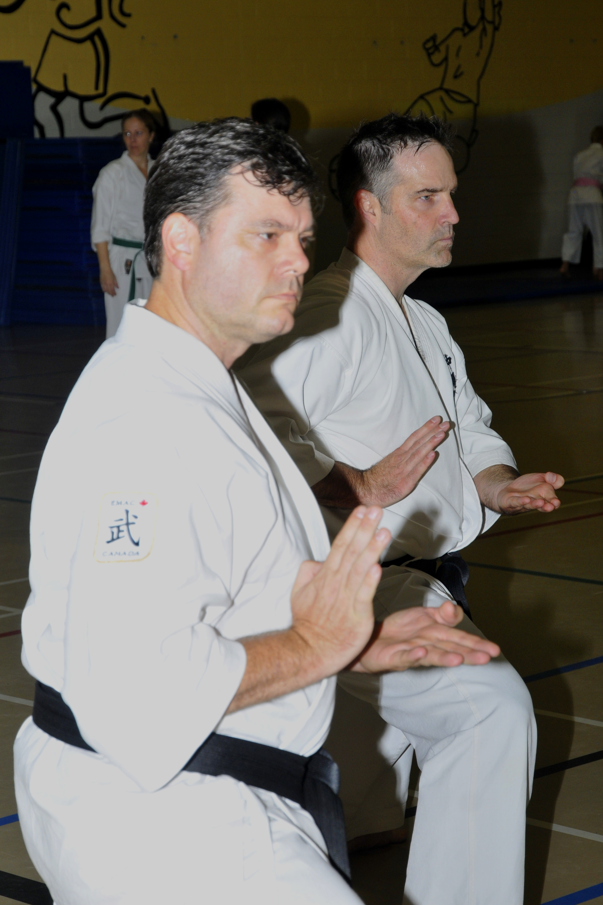

Instructors
Chief Instructor
Shihan Wayne Beaton, Rokudan 6th degree black belt (EMAC), started his martial arts career originally studying Wado Ryu (now Wado Kai) with Shihan Greg Reid in Victoria, British Columbia in 1982. Wayne moved to Ottawa in 1986 where studied under Sensei Claude Villeneuve and Sensei Raymond Deschamps, before connecting with Sensei Albert Ethier and the Rideau Osgoode Karate Club where he learned and trained for more than two decades before renaming the club to Rideau Osgoode Martial Arts and taking over the role of chief instructor.
Wayne has studied Wado Ryu Karate, Shotokan Karate, Chito Ryu Karate, but has focused on Jundokan Goju Ryu Karate. He holds a Shodan (first degree black belt) rank in Jiu Jitsu and has recently begun serious training in Okinawa Kobudo Doushi Rensei-kai®.
Wayne has been a direct student of Sensei Albert Either, Kyoshi Mike Sywyk and Shihan Dan Bailey since 1991. Wayne has trained and studied with Sensei Masami Tsuruoka, Sensei Ron Yamanaka, Sensei Tetsunosuke Yasuda, Sensei Tsuneo Kinjo, Sensei Tetsu Gima, Sensei Masaji Taira, Sensei Jean Frenette, Shihan Jack Donovan, Renshi Laura Sywyk, and many others.
Wayne believes that the Dojo should be place of serious learning and training, but should also be fun, friendly, and inviting.
Senior Black Belt
- Dan Baily, Rokudan 6th degree black belt
Assistant Chief Instructor
- Lou Kabesh, Yondan 4th degree black belt
Karate
Karate Head Instructor
- Ken Parry, Yondan 4th degree black belt
Karate Instructors
- Cynthia Kitson, Yondan 4th degree black belt
- Stephen McClellan, Sandan 3rd degree black belt
- Devon Valentine, Sandan 3rd degree black belt
- Christine Stigter, Sandan 3rd degree black belt
- Lesley Cushing, Nidan 2nd degree black belt
- Jamie Munro, Nidan 2nd degree black belt
- Katie Stigter, Shodan 2nd degree black belt
Jiujitsu
JiuJitsu Heads Instructor
- Gary Bazil, Yondan 4th degree black belt
JiuJitsu Instructors
- Rick Schwartzburg, Sandan 3rd degree black belt
- Isaac Schwartzburg, Sandan 3rd degree black belt
- Lou Kabesh, Sandan 3rd degree black belt
- Lauren Rowland, Shodan 1st degree black belt
Kobudo Instructors
Kobudo Head Instructor
- Stephen McClellan, Sandan 3rd degree black belt
Kobudo Instructors
- Cynthia Kitson, Sandan 3rd degree black belt
- Ken Parry, Sandan 3rd degree black belt
- Lesley Cushing, Sandan 3rd degree black belt
- Christine Stigter, Shodan 1st degree black belt
- Katie Stigter, Shodan 1st degree black belt